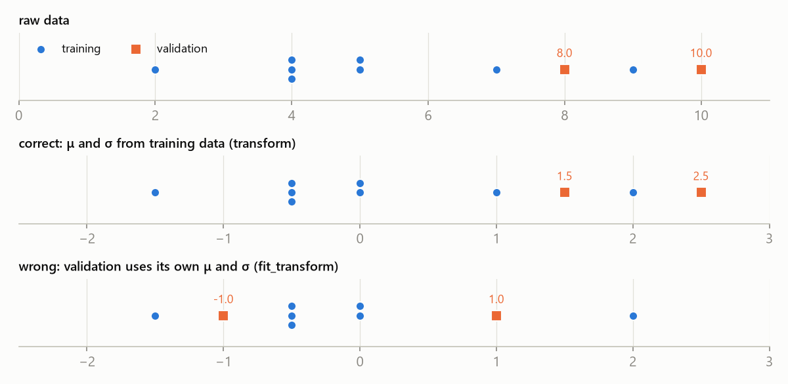

MLR – practical test 1 · Preprocessing and data leakage – MLR · https://balnerm.github.io/pripravy/mlr/test1/en/04_predzpracovani.html
Task type 4
Preprocessing and data leakage
Task A2 (“Repair preprocessing”) is a typical red flag: the code runs and returns a number, but it is wrong. Lab 2 had four such snippets (A–D) and lab 3 filled missing values. They all share one rule: everything learned from data (μ, σ, min, max, the fill value, a hyperparameter) is learned from the training part only; validation is for choosing, the test set is used once at the end.
Terms
Standardization rescales each feature to zero mean and unit standard deviation using the mean and standard deviation of the training data: \[ x' = \frac{x - \mu_{\text{train}}}{\sigma_{\text{train}}} \]
“how many standard deviations the value is above the training mean”. After standardization all features have a comparable scale, so in a distance (k-NN) the feature with large numbers does not dominate.
Min-max normalization maps a feature linearly to [0, 1] using the minimum and maximum of the training data: \(x' = (x - \min_{\text{train}})/(\max_{\text{train}} - \min_{\text{train}})\).
new data may fall outside [0, 1] – that is fine, you never refit because of it.
Data leakage happens when information from the data the model is evaluated on (validation or test) gets into training or model selection, so the performance estimate is too optimistic.
the model “saw the answer sheet”. The number then does not match what the model will do on truly new data.
The training set is used to learn model parameters and preprocessing, the validation set to choose hyperparameters, features and the model, the test set for one final estimate of performance on new data.
“fit the model | choose the hyperparameters | report once”. Typical splits 60/20/20 or 70/15/15; with little data, cross-validation on the training part.
scaler = StandardScaler()
X_train = scaler.fit_transform(train) # learn μ, σ from train and apply them
X_valid = scaler.transform(valid) # only apply the stored μ, σ
X_test = scaler.transform(test)fit | computes and stores the parameters (mean_, scale_) from the data it gets |
transform | applies the stored parameters, learns nothing new |
fit_transform | both at once – training data only |

fit_transform, they become −1 and 1, so the value 8 looks below average.The validation set's own μ and σ shift the validation points relative to the training points. For k-NN this changes who is whose neighbour – the model gets a different coordinate system than the one it learned in.
Recognise it by: fit_transform(valid), a scaler on the whole data before train_test_split, choosing k / λ / features by the test set, accuracy on training data, fillna with a mean of all data.
- Find every place where something is learned (
fit,mean(),max(scores),argmax). - Ask from which data it is learned. It must be the training part only (hyperparameter choice: validation).
- Explain the consequence: optimistic estimate, or inconsistent scaling.
- Write the repair (
transforminstead offit_transform, split before scaling, choose on validation…).
Tasks
Training and validation rows have already been split correctly. A k-NN model will use these transformed features:
scaler = StandardScaler()
X_train = scaler.fit_transform(train)
X_valid = scaler.fit_transform(valid)a) Explain why the original code is wrong for distance-based prediction. Which data must determine the mean and standard deviation? (0.75)
b) The training mean is 1 and standard deviation is 1. Standardize a validation value of 4. (0.25)
Step-by-step solution
a) fit_transform(valid) recomputes μ and σ from the validation data and overwrites the training ones. Validation points are then scaled differently from training points, so the k-NN distances between a validation point and training points do not reflect reality and the neighbours change. In addition something is learned from validation data (leakage). The parameters must come from training data only; the repair:
X_train = scaler.fit_transform(train)
X_valid = scaler.transform(valid)b) Substitute the training parameters:
\[ z = \frac{x - \mu_{\text{train}}}{\sigma_{\text{train}}} = \frac{4 - 1}{1} = 3 \]Training values of one feature: 2, 4, 4, 4, 5, 5, 7, 9. a) Compute μ and σ (population, as in StandardScaler). b) Standardize validation values 9 and 3. c) Min-max scale the value 8 using training min 2 and max 10, and the value 12.
Step-by-step solution
1. Mean and variance:
\[ \begin{aligned} \mu &= \frac{2 + 4 + 4 + 4 + 5 + 5 + 7 + 9}{8} = \frac{40}{8} = 5 \\ \sigma^2 &= \frac{9 + 1 + 1 + 1 + 0 + 0 + 4 + 16}{8} = \frac{32}{8} = 4 \end{aligned} \]so σ = 2.
2. \(z(9) = (9 - 5)/2 = 2\), \(z(3) = (3 - 5)/2 = -1\).
3. Min-max: \((8 - 2)/(10 - 2) = 0.75\); \((12 - 2)/8 = 1.25\) – outside [0, 1], but correct.
scaler = MinMaxScaler()
X_scaled = scaler.fit_transform(X)
X_train, X_test, y_train, y_test = train_test_split(X_scaled, y, train_size=20)
model = KNeighborsClassifier(n_neighbors=3).fit(X_train, y_train)
print(accuracy_score(y_test, model.predict(X_test)))What is wrong? Repair it.
Step-by-step solution
The scaler knows the range of all data including the test set, so the scaling “knows” where the test points lie. Especially with 20 training samples, the range from the training part differs from the range of all data. Repair:
X_train, X_test, y_train, y_test = train_test_split(X, y, train_size=20)
scaler = MinMaxScaler().fit(X_train)
X_train, X_test = scaler.transform(X_train), scaler.transform(X_test)scores = []
for k in range(1, 32, 2):
model = KNeighborsClassifier(n_neighbors=k).fit(X_train_s, y_train)
scores.append(accuracy_score(y_test, model.predict(X_test_s)))
print("best accuracy:", max(scores))The scaler was fitted on training data only. Why is the printed number still not an estimate of performance on new data?
Step-by-step solution
The maximum over many tries on the test set is optimistically biased: we picked the k that happened to work best on these test data. Correct: split a validation part from the training data (or use cross-validation), choose k by validation, evaluate the model with the chosen k once on the test set.
fill = pd.concat([train, valid, test])["age"].mean()
train["age"] = train["age"].fillna(fill)
valid["age"] = valid["age"].fillna(fill)a) What is wrong? b) Training ages are 20, NaN, 40; validation ages are NaN, 60. Which value replaces the missing validation age?
Step-by-step solution
The fill value is a learned parameter, just like μ in standardization. It is computed from the training part (the mean ignores NaN): (20 + 40)/2 = 30. The same number 30 is then used for validation and test. In lab 3: fill_values from train, then fillna(fill_values) on all three parts.
You have 500 samples and want a 60/20/20 split. How many samples are in each part, and what is each part used for? Why not report the validation score as the final result?
Step-by-step solution
300 training (fit the model, scaler, imputation), 100 validation (choose k, λ, degree, features), 100 test (one final measurement). The validation score of the best variant is optimistic because we selected by it – that is why an independent test set is needed.
fit_transformon validation/test – the most common mistake in the samples.- Scaling before splitting the data.
- Choosing a hyperparameter by the test set (and then reporting the same test).
- Training accuracy as the result (for 1-NN almost always 1).
- In CV the scaler must be inside a
Pipelineso it is refitted in every fold. - Trees and random forests do not need scaling (cuts on one feature); k-NN, SVM, ridge do.
Three parts: (1) what is learned from which data, (2) why it is wrong for the given method (distances, optimism), (3) the repaired line of code. For a calculation, the formula with training parameters.
Learned preprocessing (mean, standard deviation, min, max, fill values) must be fitted on the training data only and then applied with transform to validation and test data.
Fit on train only, transform everywhere; hyperparameters by validation; test once.
Summary
Preprocessing that learns from data (standardization, min-max, filling missing values) is part of the model: its parameters are estimated from the training part only and merely applied to validation and test data (transform). For distance-based methods this matters twice – different scaling of validation changes the neighbours. Leakage also comes from choosing hyperparameters by the test set or reporting the training error. The validation part is for decisions, the test part for one final number.
Take-home messages
- \(x' = (x - \mu_{\text{train}})/\sigma_{\text{train}}\).
fit_transform(train),transform(valid),transform(test).- Split before scaling; in CV the scaler goes inside the pipeline.
- k, λ, degree, features – by validation, never by test.
- Training accuracy is not a performance estimate.
Test questions
Why does k-NN need standardization and a tree does not?
k-NN adds squared differences of all features; a feature with a large range dominates the distance. A tree splits one feature by a threshold – rescaling only moves the threshold.
What is the difference between fit_transform and transform?
fit_transform computes the parameters and applies them, transform only applies the stored ones. Validation and test data get only transform.
What is data leakage? Give two examples.
Information from the evaluation data gets into learning. E.g. a scaler on all data before the split; choosing k by test accuracy; filling with the mean of all data.
What are the validation and the test set for?
Validation: choose hyperparameters, features and the model. Test: estimate the performance of the chosen model once at the end.
Why can a validation value after min-max be 1.25?
Min and max come from the training data; a new value can lie outside their range. That is correct, nothing is recomputed.
How do you scale correctly in cross-validation?
Put the scaler and the model into a Pipeline and pass it to cross_val_score; the scaler is refitted in each training fold.